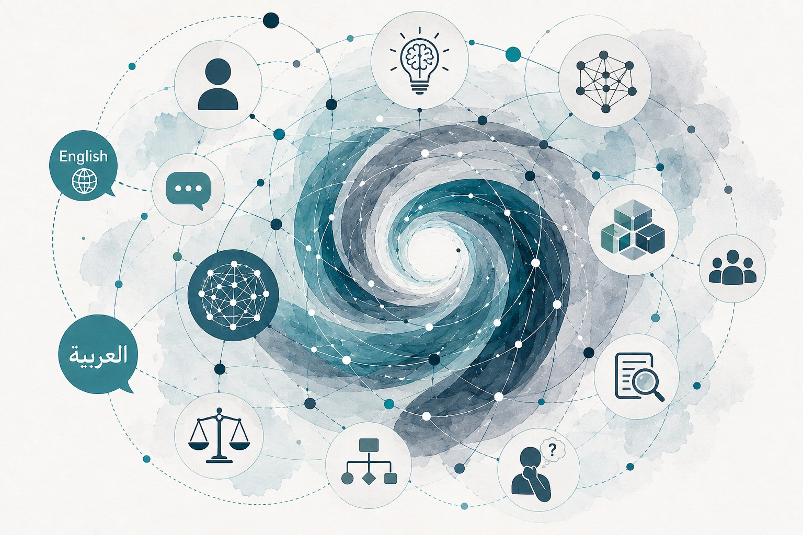

Prospective PhD students
Externally funded doctoral projects aligned with the group’s research themes.
AI for reasoning, critical thinking, and society
ArgsBase Lab studies and builds reasoning-centered language technologies that help people and AI reason more critically about complex issues. Our work connects human–AI reasoning, deliberation, computational argumentation, multilingual AI, and societal NLP.

Oude Kijk in 't Jatstraat 26, 9712EK Groningen
Featured Tools
Interfaces and research systems for exploring arguments, summaries, literature, and human-AI deliberation.
News
October 2026
We co-organised the Daleel shared task with QatarDebate. Twelve teams participated in Arabic argument mining on editorials and debates, and the overview paper is now published.
October 2026
Qing Wang joined as a PhD researcher. Her project studies how readers interpret AI in science fiction and how these perspectives can inform AI evaluation.
March 2026
Our ArgsBase system demonstration paper appeared at EACL 2026. It describes a multi-agent interface for structured human–AI deliberation.
February 2026
Sara Nabhani and collaborators released ARGUS, a study of how narrative features relate to persuasion in online arguments.
2026
Khalid Al-Khatib attended NII Shonan Meeting No.239 and gave a talk on hybrid argumentation and recommendation systems.
2025
Khalid Al-Khatib co-organised the Lorentz Center workshop Hybrid Argumentation and Responsible AI.
2025
Khalid Al-Khatib received the QatarDebate Fellowship in support of current research activity.
2025
Recognition from the Jantina Tammes School of Digital Society, Technology and AI.
2025
A position paper on why large language models should argue with us by design was nominated for the best paper award at ArgMining 2025.
2025
Our study of cross-lingual transfer and translation-based approaches to Arabic argument mining appeared at ArabicNLP 2025.
2024
A multi-faceted interface for literature exploration in text summarization was presented at EACL 2024.
2024
Our work on improving arguments across ideological viewpoints appeared in Findings of EMNLP 2024.
Collaboration
We welcome conversations with prospective PhD students, postdoctoral fellows, and visiting researchers whose work fits the group’s themes in language technology, argumentation, discourse, and human–AI reasoning.
Externally funded doctoral projects aligned with the group’s research themes.
Applications are welcome for externally funded postdoctoral projects and proposal development.
Short research visits, collaborative writing, and tool- or dataset-centered exchanges.
Looking for an advertised position? See the University of Groningen vacancies.